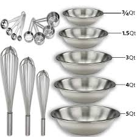
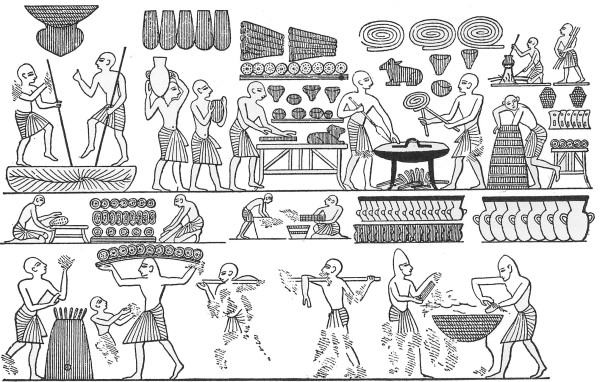

Baking 101
In this website you will learn all of the basics and necessities on baking as well as some fun facts and a little bit of the history of baking.
Lets start with the basics. The first thing you want to do is always prep by cleaning your station, washing your utensils and washing your hands.

When baking you want to make sure that you always preheat your oven just to ensure that your treat is evenly cooked and also it saves you time. The basic utensils you need in most recipies are as follows:
~Whisk/Electric mixer (in most cases it doen't matter.)
~Measuring cups/Spoons.
~One or two mixing bowls
~And a baking sheet/pan
(keep in mind that the types of utensils vary depending on the recipe)
The differences between baking and cooking
In case you didn't know baking and cooking are two decently different things. Granted they both involve making food the main difference is that baking is usually when you make desserts of baked sweets. Whereas cooking is something like when you're making dinner,lunch, or even breakfast. It usually means you're making a savoury or a spicy dish.
The history of baking
Did you know that the world's oldest oven was discovered in Croatia in 2014 and it was apparently from 6500 years ago. The Ancient Egyptians baked bread using yeast, which they had previously been using to brew beer.
Did you know
Did you know that the world's oldest oven was discovered in Croatia in 2014 and it was apparently from 6500 years ago. The Ancient Egyptians baked bread using yeast, which they had previously been using to brew beer. Also eggs keep things glued together. The egg yolks contain something called lipids, a special kind of fat that adds colour and flavour to cookies. Meanwhile, egg whites contain albumin, a protein that interlocks when it's heated, giving your dish structure.
Education
Although there are no formal education requirements to become a baker, some candidates attend a technical or culinary school. The programs generally last from 1 to 2 years and cover nutrition, food safety, and basic math. To enter these programs, candidates may be required to have a high school diploma or equivalent. The average Baker salary in Canada is $29,250 per year or $15 per hour. Entry level positions start at $23,888 per year while most experienced workers make up to $49,725 per year.

Bibliography
(2016, December 6). Six Cool Facts About The Science Behind Baking. Centennial College. Retrieved February 18, 2020, from
Centennial College.ca
I learned that eggs help keep pastries together .
I think this site is valid because the information is from a college.
(2017, December 12). Cooking Vs Baking - Difference. Difference.Guru. Retrieved February 18, 2020, from Difference Guru.com
I learned the differences between cooking and baking.
I think this site is valid because a lot of other sites stated the same things.
(n.d.). Baker Salary - Average Salary. Retrieved February 18, 2020, from Neuvoo.ca
I learned the average salary for bakers in Canada.
I think this site is valid because this website has a lot of famous brands that sponsor and thrust their information.
Wikipedia. (2020, February 18). Baking. Wikipedia. Retrieved February 18, 2020, from Wikipedia.org
I learned some of the history of baking.
I think this site is valid because a lot of people trust this site for information.